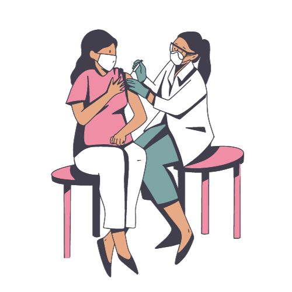
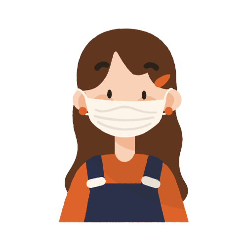

MELONJAKNYA WABAH COVID-19
Indonesia resmi masuk 4 besar kasus aktif Covid-19 terbanyak di seluruh dunia, pada Kamis (15/7/2021).
Berdasarkan data Worldometer, kasus aktif di Indonesia mencapai 480.199 kasus, melampaui Rusia yang tercatat 457.250 kasus. RI juga jauh melampaui India yang tercatat 432.011 kasus.Kenaikan peringkat Indonesia terjadi setelah Tanah Air memimpin pertambahan kasus baru Covid-19 dunia selama 2 hari berturut-turut.
SUDAHKAH TAU BAGAIMANA GEJALA COVID-19?
Kenali Gejala Tertular Covid-19
Berikut ini beberapa gejala COVID-19 yang umum terjadi:
Hidung berair, sakit kepala, batuk, sakit tenggorokan, demam, merasa tidak enak badan, hilangnya kemampuan indera perasa dan penciuman.Beberapa varian corona virus dapat menyebabkan gejala yang parah. Infeksinya dapat berubah menjadi bronkitis dan pneumonia (disebabkan oleh COVID-19), yang mengakibatkan gejala seperti:
Demam yang mungkin cukup tinggi bila pengidap mengidap pneumonia, batuk dengan lendir, sesak napas, nyeri dada atau sesak saat bernapas dan batuk.
Penyakit ini bisa menimbulkan gejala yang parah bila menyerang kelompok individu tertentu. Misalnya, orang dengan penyakit jantung atau paru-paru, orang dengan sistem kekebalan yang lemah, bayi, dan lansia.
BAGAIMANA CARA MENCEGAH TERTULAR COVID-19?
Jangan sampai kalian menjadi salah satu korban COVID-19
Berikut merupakan cara untuk megurangi tertularnya wabah COVID-19

Mendapatkan Vaksin
Anda dapat mendapatkan vaksin di Rumah Sakit atau Puskesmas terdekat

Cuci Tangan
Selalu pastikan cuci tangan setelah memegang atau bersentuhan maupun keluar rumah dan sedang ingin makan

Jaga Jarak
Jika ingin berpergian dari rumah pastikan tidak dikerumunan dan selalu menjaga jarak maksimal 1,8 meter

Memakai Masker
Pastikan selalu memakai masker ketika diluar rumah
BAGAIMANA JIKA SUDAH TERTULAR?